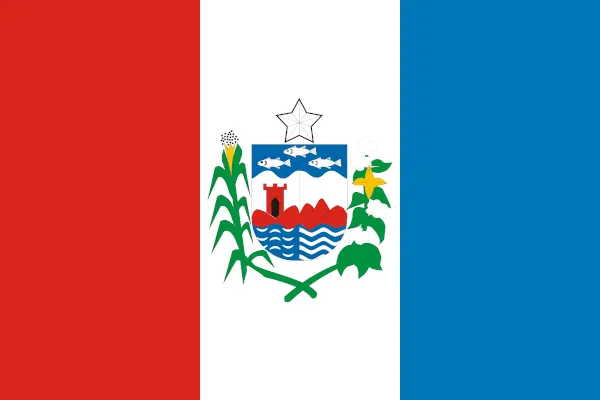
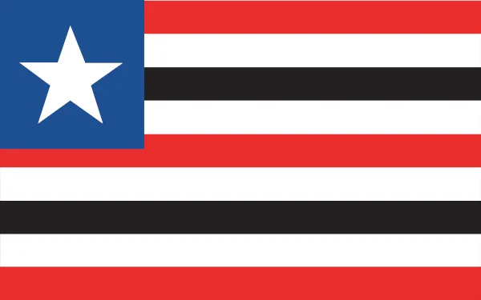
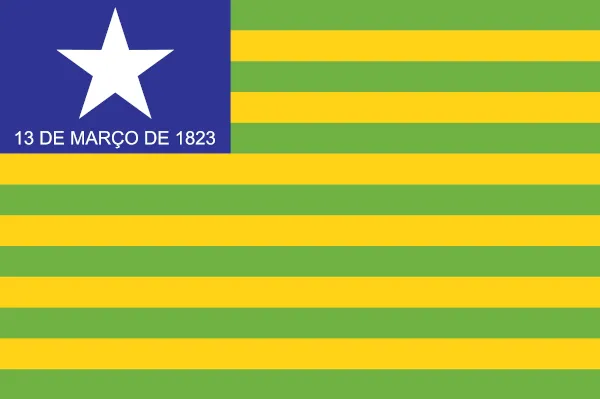
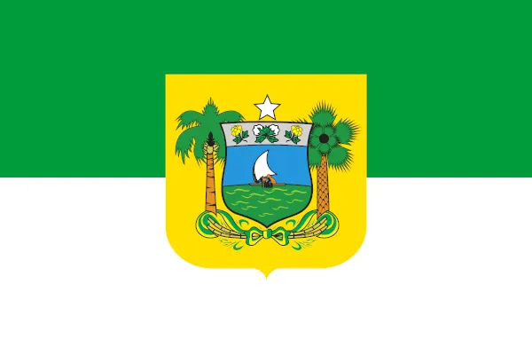

Estados do Nordeste
-
Alagoas

- Clima: "Clima: semiárido no interior do estado e tropical atlântico no litora.
- Biomas: Caatinga no interior e Mata Atlântica na faixa costeira do estado.
-
Bahia
- Clima: semiárido no interior do estado e tropical nas demais áreas, com alta umidade no litoral.
- Biomas: Caatinga, Cerrado no oeste do estado e Mata Atlântica no litoral.
-
Ceará
- Clima: semiárido no interior do estado e tropical atlântico ao longo da costa.
- Biomas: Caatinga e manchas isoladas de Cerrado.
-
Maranhão

- Clima: tropical na maior parte do estado e equatorial na parcela ocidental.
- Biomas: Amazônia (oeste), Cerrado (sul) e Caatinga (leste), com a presença da Mata dos Cocais.
-
Paraíba
- Clima: semiárido na maior parcela do estado, principalmente no oeste, e tropical atlântico na faixa costeira.
- Biomas: Caatinga e Mata Atlântica, com a presença do Agreste (faixa de transição) entre eles."
-
Pernambuco
- "Clima: semiárido no oeste do estado e tropical atlântico no litoral, com maior teor de umidade.
- Biomas: Caatinga e Mata Atlântica, com a presença da Zona da Mata entre eles.
-
Piauí

- Clima: semiárido na maior parcela do estado e tropical úmido no oeste.
- "Biomas: Caatinga, Cerrado e a Mata dos Cocais.
-
Rio Grande do Norte

- Clima: semiárido no oeste do estado e tropical atlântico ao longo da costa.
- Biomas: Caatinga em praticamente todo o estado e Mata Atlântica em uma estreita faixa na costa leste, além de manguezais no litoral.
-
Sergipe
- Clima: semiárido no interior do estado e tropical atlântico ao longo da costa.
- Biomas: Caatinga e Mata Atlântica, com manguezais na costa.